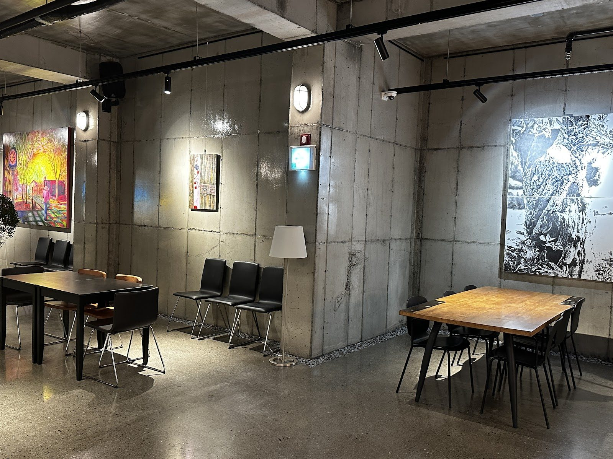

Gyeongju · Cafe
Cafe Arae Heon: A Hanok Cafe in Gyeongju
By Jungsuk Kim, Korea Plainly · Published · Updated

Photo: 카페 아래헌 / Cafe Arae-Heon / カフェアレホン / 咖啡馆 Arae-heon via Google Maps
At a glance: Cafe Arae Heon is a coffee shop in a traditional-style hanok, worth a stop for a calm break between Gyeongju’s major sights.
Visiting Cafe Arae Heon
- Region
- Gyeongju
- Address
- 181 Bobul-ro, Gyeongju, Gyeongsangbuk-do
- Google rating
- 4.9/5 from 1,388 reviews (October 2026)
Opening hours, prices and closures change. Check the map before you go.
What it is
Cafe Arae Heon brings a distinctly Korean setting to a familiar travel ritual: taking a break over coffee. The cafe is at 181 Bobul-ro in Gyeongju, in the area between the popular Bomun resort district and Bulguksa Temple. Its hanok-style architecture gives it a quieter, more traditional feel than a standard city coffee shop, making it a pleasant pause during a day of sightseeing.
A hanok is a traditional Korean house, recognized for features such as tiled roofs, wooden details and a close relationship between the building and its surroundings. Modern hanok cafes adapt that look for visitors, pairing traditional forms with the comforts of a contemporary cafe. At Arae Heon, the appeal is as much the setting and change of pace as the coffee itself. Its Google rating is 4.9 from 1,388 reviews.
Gyeongju is known for ancient tombs, temples and historic sites, and a day here can involve plenty of walking and looking. A cafe stop offers a chance to sit down, rest your feet and enjoy a different side of the city. Arae Heon suits travelers who want a calm interlude rather than another busy attraction.
What to see, do and order
Take a moment to notice the building before heading inside. The hanok-inspired exterior is part of the experience, and the traditional style makes a nice contrast with Gyeongju’s archaeological sites. If the surrounding scenery is visible from your seat or the cafe grounds, enjoy it at an unhurried pace; the point of this stop is to slow down, not rush through another checklist.
Order a coffee if you need a familiar pick-me-up, or choose another drink that appeals to you. Cafe menus in Korea commonly include both coffee and non-coffee options, though the selection varies by shop. Check the menu when you arrive, and ask staff if you need help understanding an item. For a light break, a drink and a seat may be all you need; make your choice based on what is available that day.
In Korea, cafes are often places to linger, not just grab a takeaway drink. Once you have ordered, settle in and enjoy the atmosphere. If you are visiting with friends, this is a good place to compare photos or plan the next stop. If you are traveling alone, use the quiet time to recharge before heading back out.
How to plan your visit
Allow around an hour for a relaxed cafe visit, with extra time if you want to sit longer or are traveling with a group. The best time of day depends on your itinerary: stop when you need a break, or plan your visit for a slower stretch between sightseeing. Daylight can bring out the details of traditional-style architecture, while a cafe stop later in the day can be a welcome rest after exploring.
Arae Heon works well as part of a day around Bulguksa and the Bomun area. You could visit Bulguksa Temple, take a break at the cafe, then continue toward Bomun’s lakeside attractions. You can also reverse the order, depending on your transport and plans. Gyeongju’s major sights are spread out, so group stops by area and allow time to travel between them rather than assuming everything is within walking distance.
The address is 181 Bobul-ro, Gyeongju, Gyeongsangbuk-do. If you are taking a taxi, showing the Korean place name, 아래헌, or the address can help make your destination clear. For a day with several stops, save the cafe on your map before setting out.
Good to know
Keep your visit considerate, especially if the cafe is busy. Follow any signs about seating or ordering, and avoid taking over a large table when you only need a small one. As in many Korean cafes, staff may expect you to order before sitting; check the layout and follow the shop’s directions. If you are carrying a large bag or traveling with children, be mindful of other guests and the cafe’s furnishings.
Plan this as a comfortable stop rather than a destination that needs a long list of activities. The main reasons to come are the coffee-shop break, the hanok atmosphere and the convenient position between well-known parts of Gyeongju. Check current hours or prices on Naver Map before you go.
FAQ
What kind of place is Cafe Arae Heon?
It is a coffee shop with a traditional hanok-style setting in Gyeongju.
What sights can I pair with a visit?
Bulguksa Temple and the Bomun area make natural stops to combine with a cafe break, depending on your route.
Where is Cafe Arae Heon?
It is at 181 Bobul-ro, Gyeongju, Gyeongsangbuk-do. Use the address or the Korean name 아래헌 when navigating.